A lot of organisations want to use AI to serve people, but a chat window on a website only goes so far. When someone walks into a government service centre, a bank lobby or a hotel, they expect to be greeted by someone. That's the idea behind NPsynC, our company: AI staff with a face. We build digital humans that can stand at the front of house, answer questions, guide visitors and talk to them in their own language.
Why we built it
We started NPsynC for government and semi-government agencies, and for companies, that are moving their services into the digital world but still want a human touch. A digital human can work as a receptionist, an assistant or a concierge. It never gets tired of the same question, and it can switch from Arabic to English without missing a beat. For a ministry or a large company, that's a friendly, consistent face for thousands of conversations a day.
Under the hood, the character listens, thinks with a conversational AI and answers out loud. Its face is driven in real time by our own neural lipsync, which runs locally on the GPU and streams facial animation into Unreal Engine at 60 frames a second. Nothing has to make a round trip to the cloud just to move the lips, and the whole thing installs as a single app, so a client's team can run it without writing code. But none of that matters if the person on screen doesn't feel real. Making them feel real is my part of the job.
Where I come in
Alongside running the company, I'm the technical artist behind our characters. I build them in Unreal Engine, with Blender alongside for modelling and hair. I model and texture the clothing, rig it so it moves with the body, groom the beards and eyebrows, then light and render the character until it holds up in a close-up. Here's how Ahmed came together.
Starting from a believable face
Every character begins in Unreal's MetaHuman Character editor. It gives me a face and body that already share a skeleton and a full facial rig, which is exactly what our lipsync needs to drive. I shape the face, choose the skin and keep the rig set up with both joints and blend shapes, so the mouth and cheeks can carry speech convincingly.
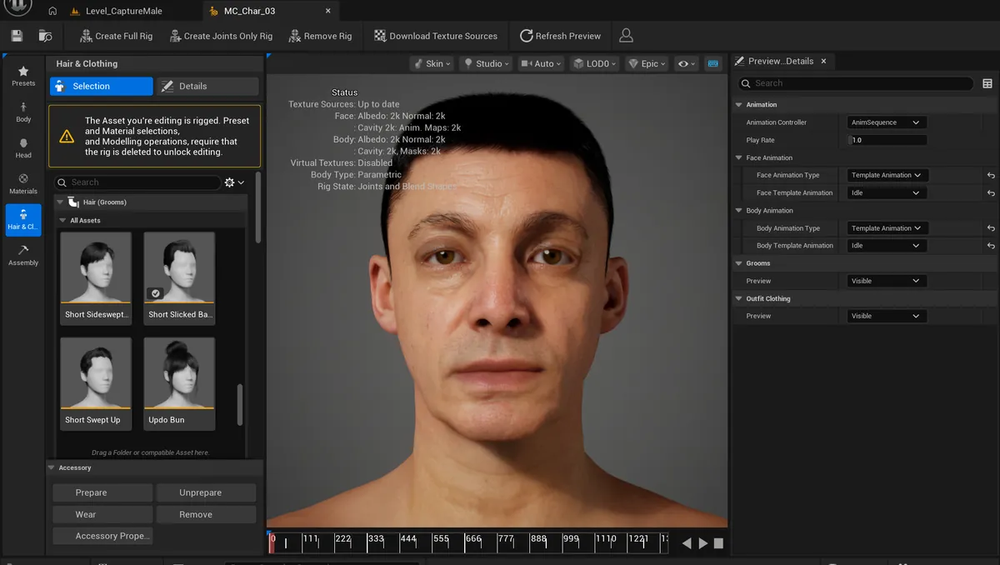
Before I touch the skin, I like to look at the face broken into its regions. Seeing where the forehead hands over to the brow, and where the cheeks meet the jaw, tells me where an edit will land and how it will blend into its neighbours. It's a small habit that saves a lot of repainting later.
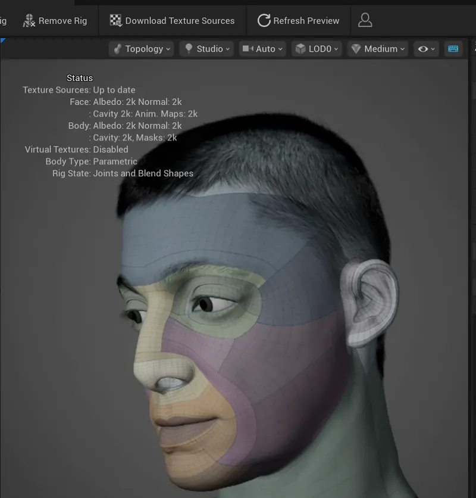
Dressing him properly
Ahmed wears a white thobe, a ghutra over his head and a black agal holding it in place. For a character meant to represent organisations in the Gulf, this has to look right. People notice immediately when traditional dress sits wrong. I modelled all three pieces in Blender. The ghutra took the most care: it's a big, soft piece of cloth that folds over the shoulders and falls down the back, so I gave it dense, even topology. That gives the folds enough shape to read in silhouette and lets the cloth bend smoothly instead of creasing in hard steps.
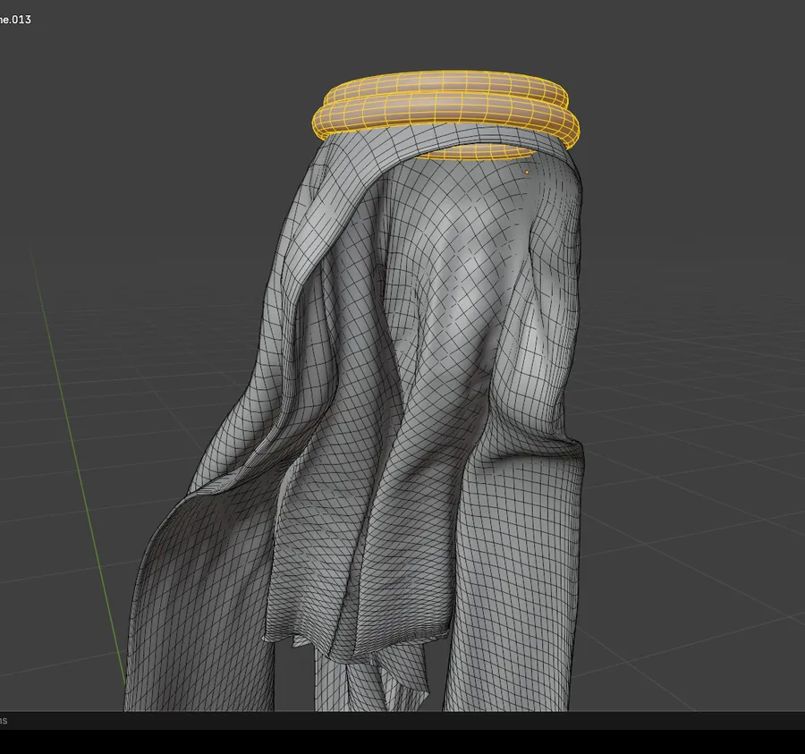
Clothing on a digital human has to move with it, so every piece is rigged to the MetaHuman skeleton and weight painted bone by bone. The neck and shoulders are where it gets interesting. When Ahmed turns his head, the collar should follow, but the shoulders of the thobe shouldn't be dragged along with it.
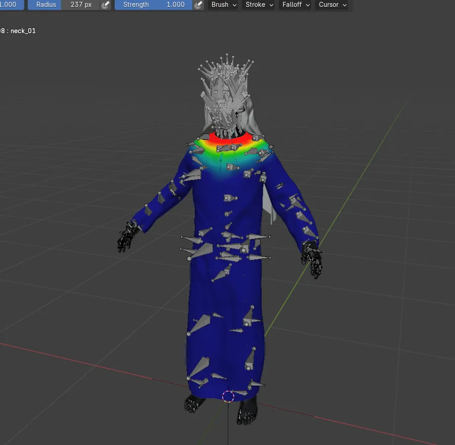
The ghutra needs a lighter touch. If I bound it fully to the nearest bones, it would move like a hard shell. Instead, I give parts of it only a little influence from the arms and shoulders, so the cloth drifts with the body rather than snapping to it. Back in Unreal, I assemble the body, face and each outfit piece as separate parts of one character, then turn him around in the viewport to check that the outfit sits right from every angle.
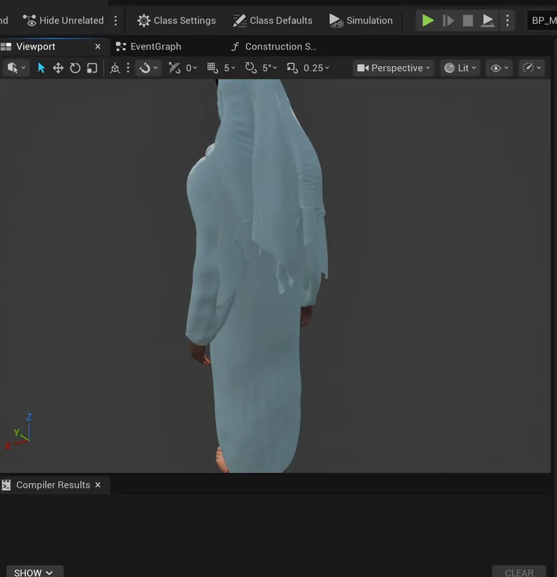
The beard and eyebrows
Nothing gives away a digital human faster than bad facial hair, so I groom the beard and eyebrows myself. I work in Blender with hair curves grown directly on the face. The curves are bound to the skin so they follow every contour, and a little random roll on the strands stops them from looking combed by a machine.
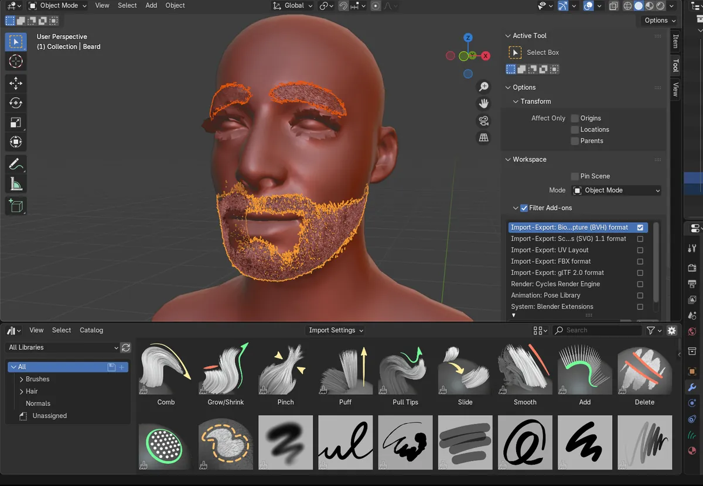
From there it's like sculpting with a comb. I comb the strands to set their flow, puff them up so they lift off the skin, pull the tips to vary the length and smooth out clumps that look too neat. The eyebrows take the longest. Their direction changes right across the brow, rising near the nose and lying flatter towards the tail, and getting that wrong makes a face look subtly off.
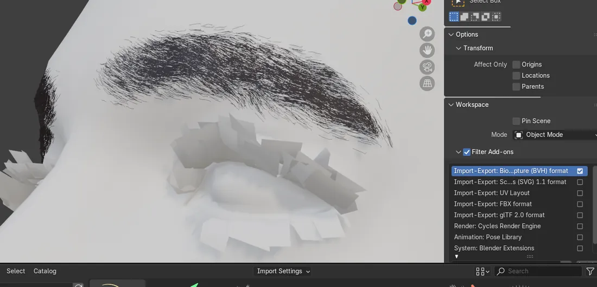
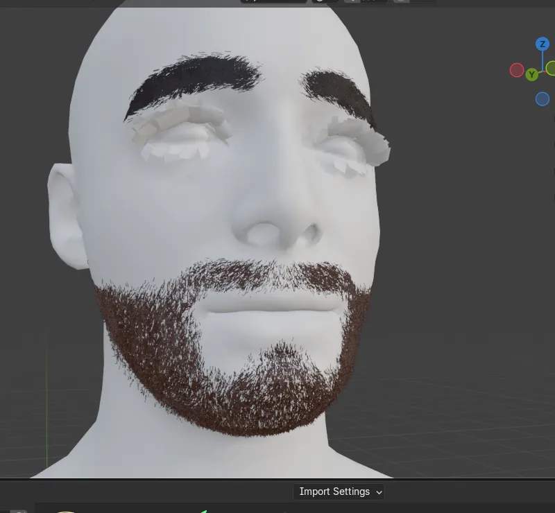
Once the shape feels right, I bring the grooms into Unreal and look at them on their own under plain outdoor daylight. Daylight is far less forgiving than a moody studio, so thin patches and strands pointing the wrong way show up straight away. I'd rather find them there than in a client demo.
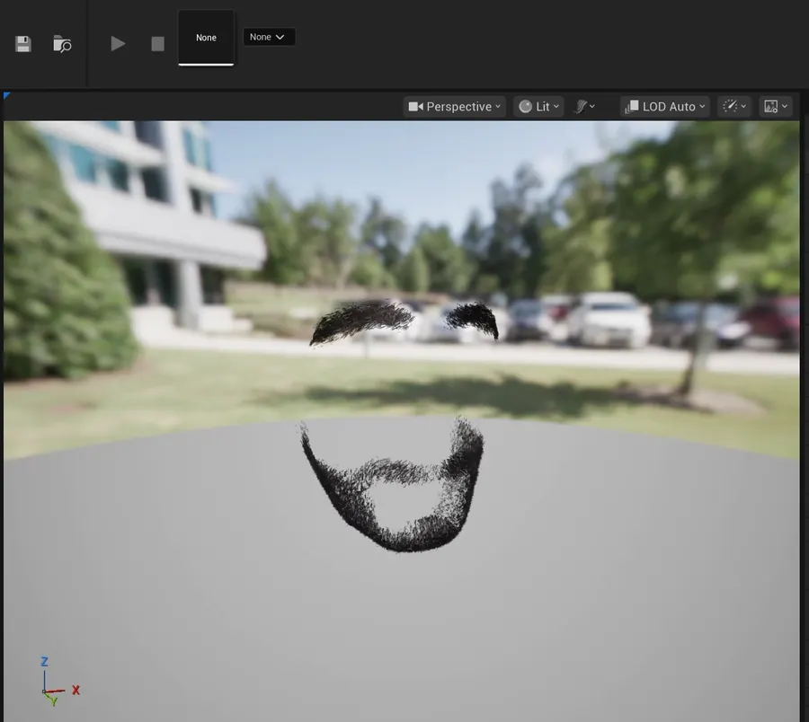
Texturing white cloth
White fabric sounds easy and isn't. Make the thobe and ghutra truly white and the first strong light burns them flat, and every fold disappears. So I keep the cloth a touch below pure white and let the lighting do the shaping. The skin works the other way: I want the detail and small imperfections that make a face read as a person rather than a mannequin.
Lighting him like a portrait
For final renders I keep a small studio level in Unreal: the character, a simple backdrop, four spotlights and a camera rig that can orbit around him for turntables. I light Ahmed the way you'd light a portrait. A warm, soft key light models his face. A pink-magenta rim light separates the white ghutra from the dark background, and a coloured wash on the backdrop sets the mood.
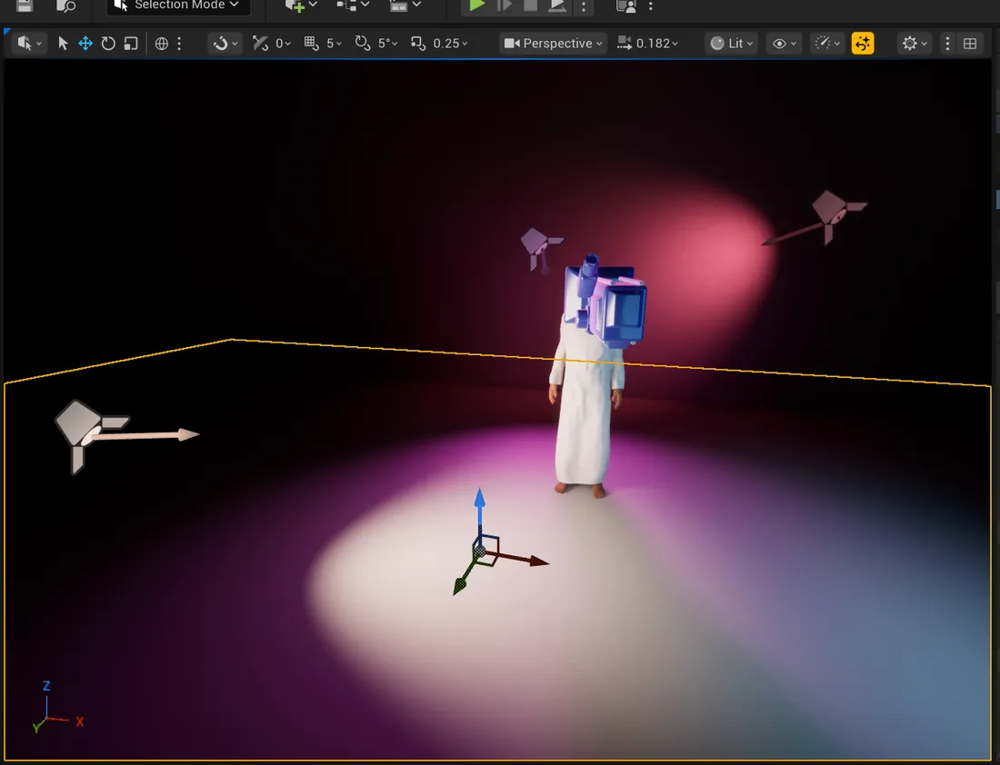
The camera moves slowly, the way it would in a filmed interview, so the viewer's attention stays on his face and voice instead of on the technology.
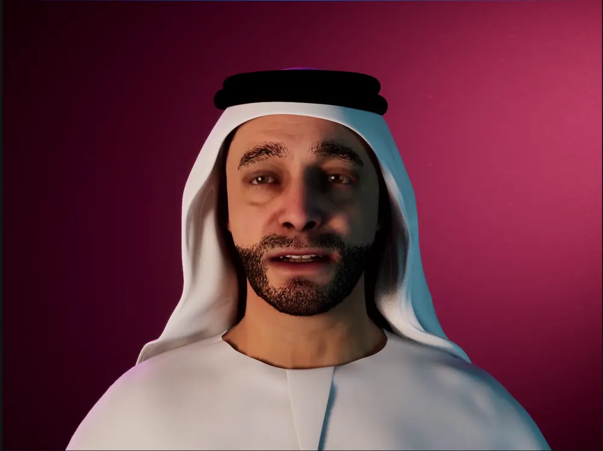
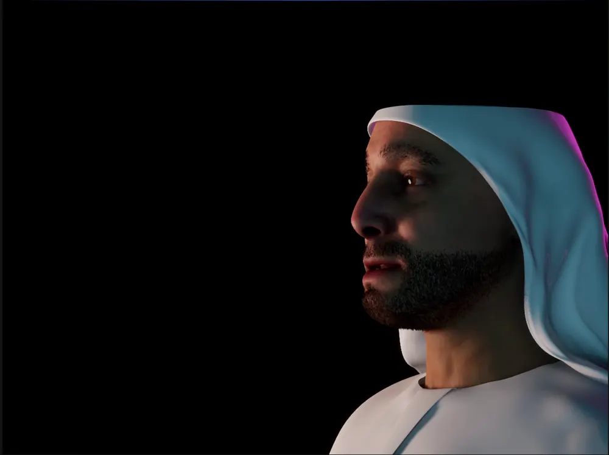
Seeing him speak
The moment that makes all of this worth it is hearing him talk. In our demo, Ahmed gives a short spokesperson pitch for an investment firm, first in Arabic and then in English, with his lips following every word. Between lines he blinks and breathes while the camera drifts around him. It's just over a minute long, and it's the clearest picture of what we're building: a representative who can greet people in their own language, any time of day.
Building a character like this means care in every layer, from the topology of a headscarf to the direction of a single eyebrow hair. Each of those details decides whether someone talks to a digital human or just looks at one. If your organisation wants AI staff with a face, have a look at npsync.dev or follow us on LinkedIn.